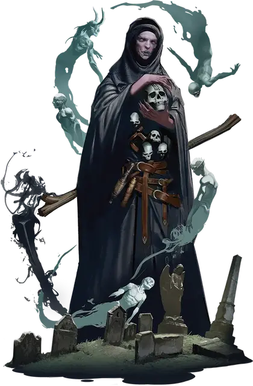

Окутанный великан смерти
Death Giant Shrouded One
Огромный Великан (Волшебник), любое мировоззрение

Класс Доспеха 12 (15 с доспехом мага)
Хиты 195 (17к12 + 85)
Скорость 40 футов
| мод | спас | ||
|---|---|---|---|
| СИЛ | 27 | +8 | +8 |
| ЛОВ | 14 | +2 | +2 |
| ТЕЛ | 20 | +5 | +10 |
| мод | спас | ||
|---|---|---|---|
| ИНТ | 23 | +6 | +11 |
| МДР | 16 | +3 | +8 |
| ХАР | 16 | +3 | +8 |
Навыки Восприятие +8, Магия +11, Скрытность +7
Иммунитет к урону некротическая энергия
Иммунитет к состояниям испуг
Чувства тёмное зрение 120 футов, пассивное Восприятие 18
Языки Общий, Великаний
Опасность 15 (13000 опыта)
Бонус мастерства +5
Особенности
Руна смерти. У великана есть руна смерти, начертанная на черепе великана. Держа в руках или нося на себе череп с руной, великан может использовать действие Коса жатвы и бонусное действие Покров душ.
Череп с руной смерти имеет КД 18; 35 хитов; и иммунитет к урону некротической и психической энергией, а так же урону ядом. Череп восстанавливает все свои хиты в конце каждого хода, но обращается в пыль, если его хиты опускаются до 0 или когда великан умирает. Если руна уничтожена, великан может начертать руну смерти на другом черепе, находящемся в его распоряжении, по окончании короткого или продолжительного отдыха.
Действия
Мультиатака. Великан совершает три атаки Разрывом души. В качестве альтернативы, если у великана есть руна смерти, он может совершить три атаки Косой жатвы.
Разрыв души. . Рукопашная или дальнобойная атака заклинанием: +11 к попаданию, досягаемость 10 футов или дистанция 120 футов, одна цель. Попадание: 28 (4к10 + 6) урона некротической энергией. Если цель находится испугана, великан получает временные хиты, равные нанесенному урону.
Коса жатвы (требуется Руна смерти). Рукопашная атака заклинанием: +11 к попаданию, досягаемость 15 футов, одно существо. Попадание: 38 (7к10) урона некротической энергией, и цель не может восстанавливать хиты до конца своего следующего хода. Цель умирает, если в результате этой атаки ее хиты опускаются до 0.
Использование заклинаний. Великан может наложить одно из следующих заклинаний, используя Интеллект как базовую характеристику заклинаний:
• Неограниченно: обнаружение магии [detect magic], доспехи мага [mage armor];
• 3/день каждое: разговор с мёртвыми [speak with dead], Тензеров парящий диск [Tenser’s floating disk].
Бонусные действия
Устрашающая телепортация (перезарядка 4-6). Великан волшебным образом телепортируется вместе со всем несомым и носимым снаряжением, на расстояние до 40 футов в незанятое пространство, которое он может видеть. Каждое существо в пределах 10 футов от места, оставленного великаном, должно преуспеть в спасброске Мудрости Сл 16, иначе станет испуганным до конца своего следующего хода.
Покров душ (требуется Руна смерти). Великан окутывает себя множеством душ. Пока великан окутан, каждое существо, которое начинает свой ход в пределах 5 футов от великана, должно преуспеть в спасброске Мудрости Сл 19, иначе с помехой совершает спасброски до конца своего следующего хода. Покров исчезает через 1 минуту, когда великан умирает, когда великан снова использует это бонусное действие или когда руна смерти великана уничтожается.
Описание
Большинству великанов хорошо известно, что не стоит использовать руну смерти регулярно.
- Дианкастра
"Хорошо известно”? Возможно, но нельзя отрицать, что великаны смерти отлично умеют с ней управляться.
- Бигби
Давным-давно большая группа облачных великанов отправилась в Царство Теней в поисках способа сохранить свою рушащуюся империю. Отчаявшись спасти себя и свой уклад жизни, они коллективно заключили пари с Королевой Воронов, таинственным богом смерти и памяти, обитающим на этом плане. Рассказы об этом пари и его исходе разнятся: одни говорят, что Королева Воронов отвечала на все загадки, которые задавали великаны, пока они не падали от изнеможения, в то время как другие описывают серию все более невероятных событий, благоприятствующих Королеве Воронов в каждом пари. Что несомненно, так это то, что великаны сильно недооценили Королеву Воронов. Когда они проиграли свое пари, Царство Теней стало их домом, и с тех пор они неохотно служат Королеве Воронов.
Со временем Царство Теней преобразило этих великанов; их тела высохли, а цвет лица приобрел темно-фиолетовый оттенок. Они стали первыми великанами смерти, а их потомки по сей день бродят по Царству Теней, разыскивая, как на том плане, так и на Материальном, души, которые могли бы понравиться их божественной королеве.
Окутанный великан смерти
Окутанный великан смерти узнал секреты магии смерти — некоторые говорят, что от самой королевы Воронов. Окутанный собирает черепа павших сородичей и наносит руну смерти на лучшие лучшие черепа из своей жуткой коллекции. Отказавшись от доспехов в пользу мрачных одежд, окутанный использует рунную магию, чтобы создавать призрачное лезвие косы на конце посоха и призывать ауру измученных душ для защиты.